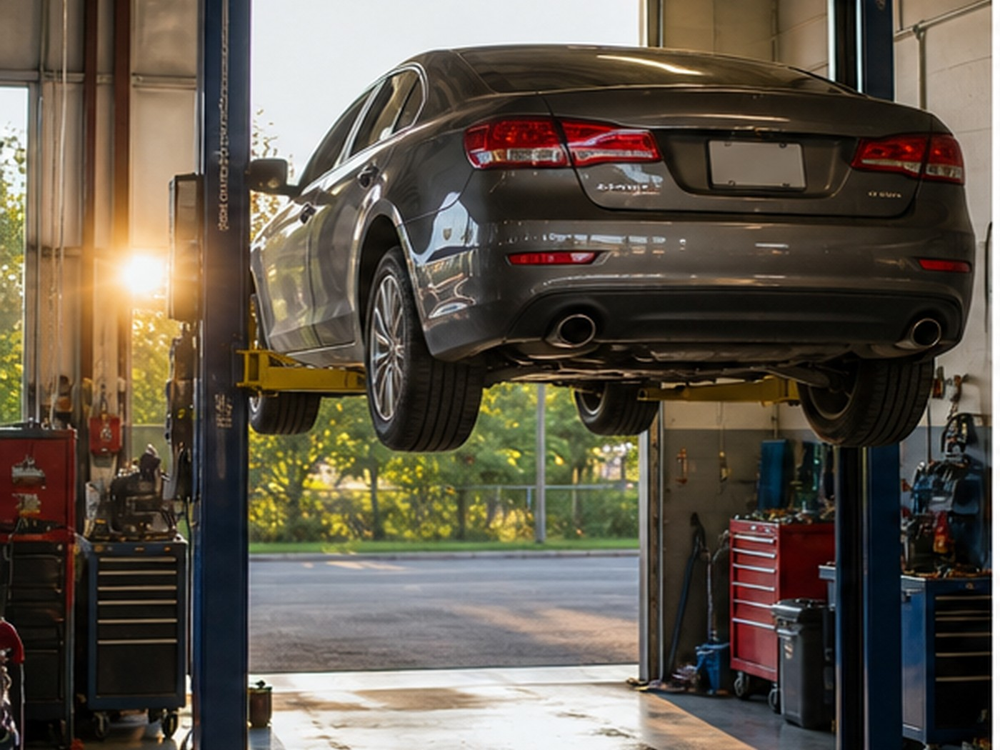
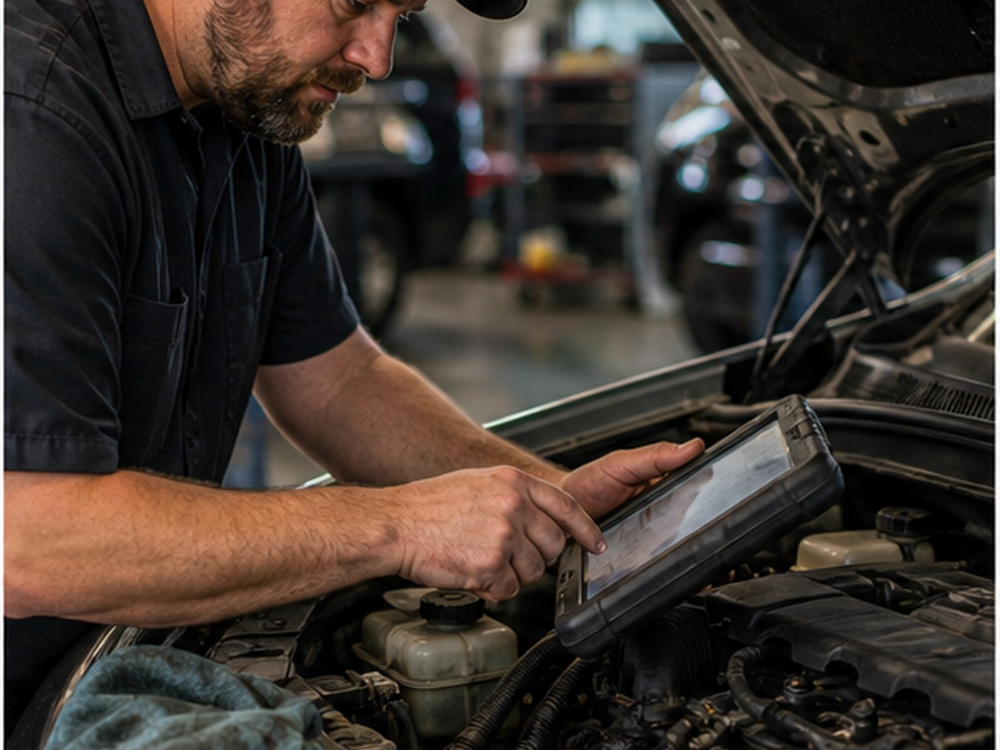
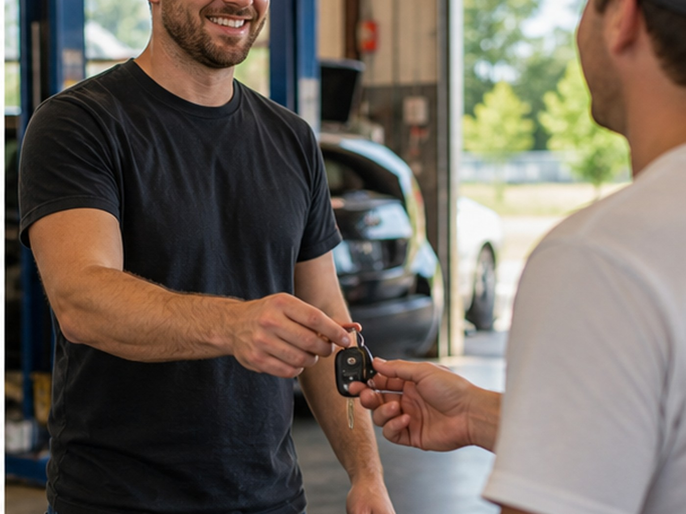

East Main Street auto repair
Family-name trust for Easley auto repair.
Diagnostics, brake repair, oil changes, AC service, engine care, and routine maintenance for Easley drivers.
- 4.698 Google reviews
- Auto RepairEasley, SC
- FastTap-to-call scheduling

Services
Clear options for local customers.
- Diagnostics
- Brake repair
- Maintenance
- Oil changes
- AC service
- Engine care

Local service
Dependable auto service on East Main Street.
Merck's Automotive gives customers a simple way to understand repair options, confirm the location, and call the shop.

Service path
Match the symptom to the next step.
A warning light visit should capture the vehicle, symptom, and diagnostic request before the customer arrives.
Local proof
Built around the trust customers already look for.
- 4.6-star Google rating
- 98 public reviews
- E. Main Street location
Contact
Merck's Automotive
722 E Main St, Easley, SC